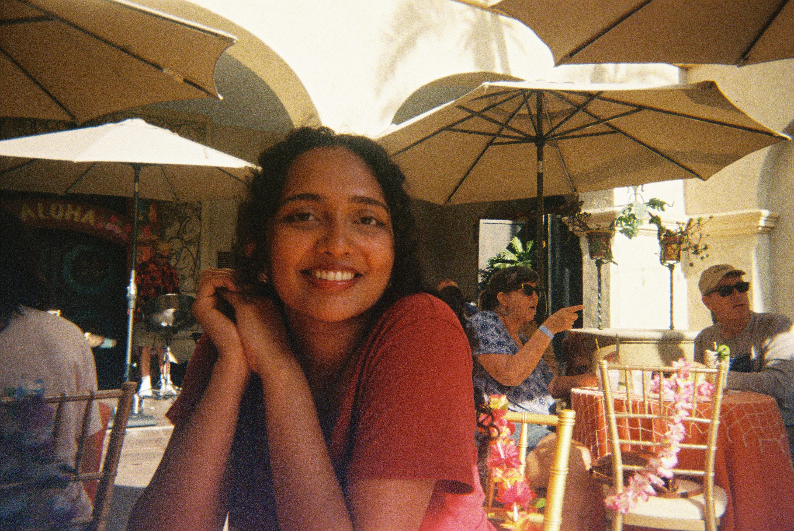

Boston University · Mathematics & Data Science
hey, I’m Tanisha.


Things I’ve been working on
Projects.
01
02
03
Python · Optimization
Gradient Descent From Scratch
Reached the same stopping threshold in 176 updates instead of 5,216 by choosing a step size based on the loss function’s curvature.
Read about itPython · Q-learning
Prospect Theory in Q-Learning
Compared standard and loss-averse Q-learning agents on Gymnasium’s slippery FrozenLake.
Read about itLinux · Command line
OverTheWire Bandit
Notes from working through Bandit to Level 28: what I learned, what tripped me up, and how I got unstuck.
See level notesLet’s connect
Get in touch.
If you’d like to talk about a project, math, or anything on this page, I’d love to hear from you.